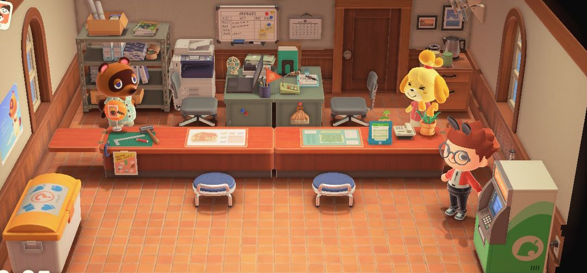
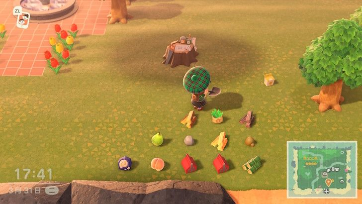
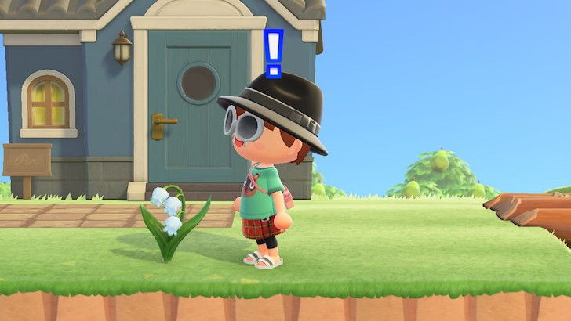

五星岛屿评价怎么拿
西施惠怎么打分、卡在四星该查哪里，最后附一份清单
岛屿评价升到五星，西施惠会送你金色浇花壶的DIY手册，岛上也开始自己冒出铃兰。很多人一路顺顺当当升到四星，然后就卡住了：家具摆了一大堆，花也种了不少，问来问去还是四星。
卡住的原因多半出在两处：一是评分其实分成两笔，只往一边使劲是升不上去的；二是岛上有些东西在悄悄扣分，比如地上的杂物、杂草、种得太多的树、扎堆摆的同款家具。下面先讲西施惠怎么打分，再讲卡在四星时该从哪查起，最后附一份冲五星的清单。
01找西施惠问评价
服务处盖成正式建筑以后，西施惠就坐进了柜台里。找她说话，选「岛屿评价」，她就会告诉你岛上现在几星。
评价是你问的那一刻现算的，不用等到第二天。所以最省事的做法是改完一片区域就回去问一次，这次改动有没有用，当场就能知道。
分数还不够时，她会点出岛上差在哪，比如花太少、垃圾太多。照着她的话去补，比自己闷头瞎猜快得多。

服务处里，右边柜台后面的就是西施惠
冲五星的路上，三星是第一个大关口。升到三星以后 K.K. 会来岛上开演唱会，你也会拿到岛屿创作家，从此能挖河、造悬崖、铺路，后面改岛的活基本都靠它。
02分数是怎么算的
游戏把分数拆成两笔：发展分算的是设施、居民、家具这些「人气」，风光分算的是花草树木这些「自然」。每升一星都要两笔同时过线，一边分再高，另一边差一截也照样升不上去。
| 星级 | 发展分 | 风光分 |
| 二星 | 80 起 | 200 起 |
| 三星 | 160 起 | 270 起 |
| 四星 | 400 起 | 350 起 |
| 五星 | 665 起 | 450 起 |
从表上看，四星到五星这一步发展分要从 400 涨到 665，是跨度最大的一步，四星以后要在户外家具上多下功夫。
小提示这些数字是玩家拆包拆出来的，任天堂没公布过。拿来判断往哪使劲就够了，用不着拿计算器一分一分地算。
发展分从哪来
设施和居民是打底的。博物馆、裁缝店各加 15 分；居民住满 10 位，分数比 9 位时又多出一截。每座桥、每条坡道也各加 15 分，造到四五座就是一笔可观的分数。
真正的大头是户外家具。摆在外面的每一件都算分，越贵的分越高，宽 3 格以上的大件另有加成。栅栏每段只加一点点，不过铺得多了也能凑出不少。
风光分从哪来
长大的树和竹子每棵算 1 分，灌木每株算半分。花从种子到开花都算分，开花时分最高。另外，摆在户外的 DIY 家具也会给风光分添上一点。
03卡在四星，先查这四样
家具和花都不少，评价却一直上不去，多半是有扣分项在拖后腿。按下面四样挨个排查。
地上的杂物收干净
随手扔在地上的水果、树枝、贝壳，钓上来没收拾的空罐、长靴、轮胎，在西施惠眼里都是垃圾。整整齐齐摆好的户外家具不算在内，所以该摆的摆好，用不上的就收进口袋或卖掉。

水果、树枝、杂草散了一地，这些都会拖低评价（图：T客邦）
杂草拔掉
杂草一多会直接扣发展分。自己拔太累的话，3.0 以后可以请园艺店的然然帮忙除草，只收 6 万铃钱，岛上杂草有 30 棵以上就能请她。
树别种太多
树能加风光分，但种过头反而坏事。树（含竹子）超过约 220 棵，西施惠会说岛上太茂密，五星就拿不到了。稳妥起见，全岛的树控制在 100～200 棵。
同款家具别扎堆
游戏会把岛切成一块块 8×8 的小格子来算家具分。同一块里排上一溜一模一样的家具，多出来的那些不但不加分，还会倒扣。同款家具想多摆的话，分散到岛上不同的地方去。
注意树和花的分可以互相补。风光分不够的时候，多种些花，别再往岛上加树。
04冲五星的清单
下面是多数玩家拿到五星时岛上大致的样子。这些都是经验值，不是硬门槛，照着一条条补齐，一般差不了太多。
1. 居民住满 10 位，博物馆和裁缝店都已经盖好。
2. 桥和坡道加起来造了 4 座以上。
3. 户外摆了两三百件家具，种类尽量多，全岛分散着摆。
4. 花种了两三百株，树留在 100～200 棵。
5. 围上一些栅栏，100 段左右就够了。
6. 杂草拔光，地上的杂物全部收起来。
7. 每改完一片就去问一次西施惠，照她说的补短板。

石板路、栅栏、花坛和户外家具，摆出去都在加分
小提示两三百件家具听着吓人，其实不用花大钱。自己做 DIY 做出来的、钓鱼大赛和捕虫大赛换来的、射气球打下来的，摆出去一样算分。
05升到五星以后
金色浇花壶
拿到五星以后，西施惠会送你金色浇花壶的DIY手册，材料是一个浇花壶加一块金矿石。金色浇花壶一次能浇到身前 3×3 共 9 格，给大片花田浇水快得多。拿它去浇黑色玫瑰，接下来长出的新花就是金色玫瑰。
铃兰
铃兰只会在五星岛上自然长出来，能不能长、长在哪全看运气，常常冒在悬崖上面。这种花摘不下来，想换个地方，只能拿铲子把整株挖起来移种。3.0 以后花也能放进收纳，遇到喜欢的铃兰可以先挖起来收着。

五星之后悬崖边冒出的铃兰，不能摘，要整株挖起来（图：T客邦）
注意拿到五星以后再大改岛，评价可能会掉回四星，掉星这段时间铃兰不会长新的。动大工程之前心里要有数。
06几个常见的误会
屋里装修不算分。岛屿评价只看户外，屋里怎么布置，算的是快乐家协会给你家打的分，跟岛屿评价无关。
家具不是越多越好。数量确实要够，但同一块地里重复的家具会倒扣分，摆得多不如摆得散。
树也不是越多越好。超过上限就直接拿不到五星，风光分不够时多种花更稳。
改完不用等一天。评价是问的时候现算的，改完就能去问。
动森圈圈 · 小程序和 iOS App 都搜「动森圈圈」